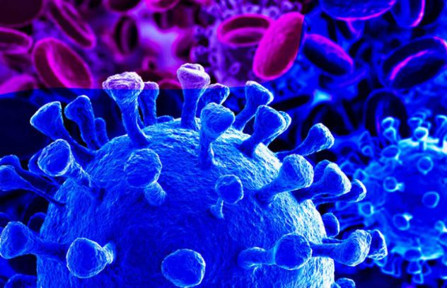

COVID-19
La crisis del coronavirus estalló en China el pasado 31 de diciembre y desde entonces ha vivido una propagación ascendente y continuada, siendo Europa uno de los continentes más afectados por Covid-19. Desde entonces, se han conocido más de 130.000 contagios en todo el mundo y el número de muertes ha superado la barrera de los 3.000.

Se le designo a la enfermedad el nombre de COVID-19, causada por el 2019-nCoV, y se pensó erroneamente que no era altamente contagioso, ya que no había registrado de infección persona-persona.concluyendo que la transmicion era por vías desconocidas durante la estadia era por vias desconocidas durante la estadia hospitalaria.
A partir de ahi, el numero de pacientes contagiados fue aumentando exponencialmente en China continental, y para el 30 de enero se habian reportado 9.692 casos en toda china y 90 casos en diferentes paises incluyendo Taiwan, Tailandia, Vietnam, Malasia, Nepal, Sri lanka, camboya, Japón, Singapur, la República de Corea, Emiratos Árabes Unidos, Estados Unidos, Filipinas, India, Irlan, Australia, Canada, Finlandia, Francia y Alemania.
Sin embargo, la ruta mas importante de transmision es la ruta de persona a persona. Inicialmente la mayoria de los pacientes identificados se habian vinculado directamente o indirectamente al mercado de Wuhan, pero algunos casos de personas no vinculadas al mercado, incluyendo familiares de los enfermos fueron reportados. La evidencia sugerida que la transmision persona a persona era posible. De la misma manera que el SARS-CoV, el SARS-CoV2 se transmite persona a persona por contacto directo o indirecto con secreciones respiratorias o fomites al estornudar o toser.
La aplicación de medidas de distanciamiento social y aislamiento, impidiendo el contagio persona a persona, permitió a China controlar la epidemia en su territorio según el reporte de sus autoridades, y no ha reportado casos de nuevos contagios desde el 19 de marzo del presente año. Sin embargo, en otros países los números aumentan de manera desmesurada (a excepción de Corea del Sur).18 Las estrictas medidas de distanciamiento social que se han aplicado en Corea del Sur y el seguimiento continuo de los casos que han dado positivo para SARS-CoV2, pueden estar haciendo la diferencia.
El principal problema de este tipo de enfermedades virales de alcance global, es que son procesos dinámicos con posibles ciclos de repetición, como se vio entre enero de 1918 y diciembre de 1920 con la Gripe Española (causada por el virus H1N1), la cual produjo tres brotes durante este período. La Gripe española se estima que causó entre 25 a 50 millones de muertes, arrojando más perdida de vidas en 25 semanas que el VIH-Sida en 25 años.33 De los soldados norteamericanos que murieron durante la primera guerra mundial, la mitad pereció producto de la Gripe Española y no por las balas del enemigo. La desnutrición, los hospitales desbordados en su capacidad, la mala higiene y las superinfecciones produjeron la mayoría de las víctimas fatales.
Protéjase a sí mismo y a quienes lo rodean informándose y tomando las precauciones adecuadas.
Siga los consejos de su organismo de salud pública local. Para evitar la propagación de la COVID-19:
*Lávese las manos con frecuencia. Use agua y jabón o un desinfectante de manos a base de alcohol.
*Manténgase a una distancia segura de cualquier persona que tosa o estornude.
*No se toque los ojos, la nariz o la boca.
*Cuando tosa o estornude, cúbrase la nariz y la boca con el codo flexionado o con un pañuelo.
*Quédese en casa si se siente mal. Si tiene fiebre, tos y dificultad para respirar, solicite atención médica.
*Llame con antelación.
*Siga las instrucciones de su organismo sanitario local.
*Evitar las visitas innecesarias a los centros de atención médica permite que los sistemas sanitarios funcionen con mayor eficacia, lo que redunda en su protección y en la de los demás.
Hasta la mañana de hoy se han registrando un total de mil casos confirmados por pruebas PCR de coronavirus en Chihuahua.
A su vez suman mil 539 casos descartados, 660 sospechosos, 196 recuperados y 189 muertos.
Ciudad Juárez llegó a los 615 casos mientras que Chihuahua acumula 296 casos confirmados de Covid-19.
El resto de los casos se distribuye en los demás municipios del estado con menos de 15 casos confirmados.
Debido a la cantidad de casos se espera que este fin de semana se alcance el pico de la pandemia del coronavirus, informó Arturo Valenzuela, director médico de la Zona Norte.
CONFIRMADOS: 1000
DESCARTADOS: 1, 539
SOSPECHOSOS: 660
RECUPERADOS: 196
MUERTOS: 189
CIUDAD JUÁREZ: 615
CHIHUAHUA: 296
Para mas informacion del COVID-19 visita el siguiente enlace